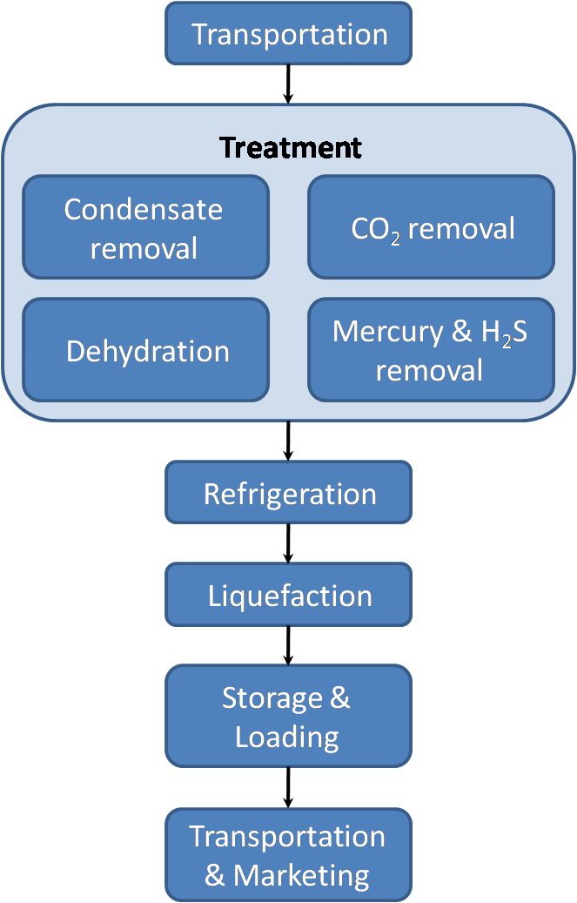

"We Walk the Talk to Ensure Your Energy Needs are Met"
Our main goal is to become the leading supplier of choice for LNG in the Asia Pacific Region for the next 50 years. KSP business is composed of students and teachers of Kent Street Senior High School. Here at KSP, we work collaboratively with the community around us and we do what is best for our environment. KSP employees ensure the best performance because we're "the right people doing the right thing on the right time"
At KSP, we aim for high quality product for our consumers based on the common work ethic which is:
LNG (Liquified Nature Gas) is natural gas (primarily methane) that has been converted into liquid so thay could transport it easily. It takes up about 1/600th the volume of natural gas in gas state. LNG has less waste, odourless and colourless. The liquifaction process involves removal of certain components, such as dust, acid, gases, helium, water, and heavy carbons. The natural gas is then condensed into a liquid at close to atmospheric pressure by cooling it to approximately -162 °C. Maximum transport pressure is set around 25 kPa.
 LNG achieves a higher reduction in volume than Compressed Natural Gas (CNG) so that the energy density
of LNG is 2.4 times greater than that of CNG or 60% that of diesel fuel. This makes LNG cost
efficient to transport over long distances where pipelines do not exist. Specially designed cryogenic
sea vessels (LNG carriers) or cryogenic road tankers are used for its transport. LNG is principally
used for transporting natural gas to markets, where it is regasified and distributed as pipeline
natural gas. It can be used in natural gas vehicles, although it is more common to design vehicles
to use compressed natural gas. Its relatively high cost of production and the need to store it
in expensive cryogenic tanks have hindered widespread commercial use. Despite these drawbacks,
on energy basis LNG production is expected to hit 10% of the global crude production by 2020
{kind=link}